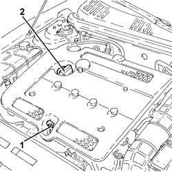
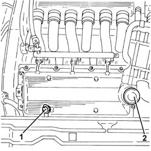
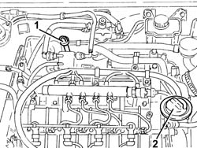
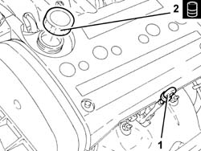

0010T11 ENGINE OIL CHECK LEVEL AND TOP UP
- Path
- Procedures > 00 MAINTENANCE > 0010 UNITA' NUOVE E MANUT. PROGRAMMATA > 0010T VEHICLE OIL AND FLUIDS > 0010T11 ENGINE OIL CHECK LEVEL AND TOP UP
- Kind
- repair procedure (removal / refitting; the operation number is the code)
- Applies to
- all engines; all production periods
- Interactive page
- https://sloeber94.github.io/elrnDB-aGt/en/#/125000834
Applies to: engines: 2.0 JTS; all production periods
1. Using the dipstick, check that the engine oil level is between the MIN and MAX marks on the dipstick.
2. If necessary, top up the level by introducing the recommended fluid after having removed the cap.
Type | Component | Description | Qty. | |
|---|---|---|---|---|
- | Oil [l] | ENGINE LUBRICATION SYSTEM | SELENIA RACING | 4.4 |

Applies to: engines: 2.0 JTS; all production periods
Fit the cap.
Let the engine run for a few seconds and wait a few minutes after it has stopped.
Check the oil level again, then insert the dipstick properly in its housing.
Applies to: engines: 3.2 V6; all production periods
.
1. Extract the engine oil dipstick, clean it and then fully reinset it, extract it and check that the level is between the MIN and MAX marks on the actual dipstick.
2. If the oil level is close to or actually below the MIN mark, introduce the recommended oil through the filler until it reaches the MAX mark.
Type | Component | Description | Qty. | |
|---|---|---|---|---|
- | Oil [l] | ENGINE LUBRICATION SYSTEM | SELENIA RACING | 5.9 |

Applies to: engines: 1.9 JTD 16V; all production periods
.
Proceed with removal Refer to op. 1016A10 SOUNDPROOFING COVER - R&R
.
1. Extract the engine oil dipstick, clean it and then fully reinset it, extract it and check that the level is between the MIN and MAX marks on the actual dipstick.
2. If the oil level is close to or actually below the MIN mark, introduce the recommended oil through the filler until it reaches the MAX mark.
Type | Component | Description | Qty. | |
|---|---|---|---|---|
- | Oil [l] | ENGINE LUBRICATION SYSTEM | SELENIA TURBODIESEL | 4.4 |
For the optimum operation of the engine in particularly harsh climate conditions (temperatures below -15C) use the recommended oil for the engine lubrication circuit.
Type | Component | Description | Qty. | |
|---|---|---|---|---|
- | Oil [l] | ENGINE LUBRICATION SYSTEM | SELENIA WR DIESEL | 4.4 |

Applies to: engines: 1.9 JTD 16V; all production periods
Proceed with refitting Refer to op. 1016A10 SOUNDPROOFING COVER - R&R
.
Applies to: engines: 1.8 T.SPARK; all production periods
- Using the dipstick, check that the engine oil level is between the MIN and MAX marks on the dipstick.
- If necessary, top up the level by introducing the recommended fluid after having removed the cap.
Type | Component | Description | Qty. | |
|---|---|---|---|---|
Oil [l] | ENGINE LUBRICATION SYSTEM | SELENIA 20K | 4.4 |
- For decidedly sporty use of the vehicle it is advisable to use the recommended oil for the engine lubrication circuit.
Type | Component | Description | Qty. | |
|---|---|---|---|---|
Oil [l] | ENGINE LUBRICATION SYSTEM | SELENIA RACING | 4.4 |
- For the use of the vehicle in particularly severe climate conditions it is advisable to use the recommended oil for the engine lubrication circuit.
Type | Component | Description | Qty. | |
|---|---|---|---|---|
Oil [l] | ENGINE LUBRICATION SYSTEM | SELENIA PERFORMER MULTI POWER | 4.4 |

Applies to: engines: 1.8 T.SPARK; all production periods
- Place the cap in its housing.
- Let the engine run for a few seconds and wait a few minutes after it has stopped.
- Check the oil level again, then insert the dipstick properly in its housing.
Topics that link to this page (33)
- W05 WHITE EXHAUST FUMES
- W11 EXCESSIVE EXHAUST FUMES
- 1004B10 POWER UNIT WITH MANUAL GEARBOX - R + R
- 1016C10 SINGLE CYLINDER HEAD, REMOVED - OVERHAUL
- 1020A20 CRANK CASE OIL SUMP - R + R CLEAN SEALS FOR SEALANT APPLICATION
- 1020A30 ENGINE OIL DRAIN PLUG - REPLACE
- 1020D10 FRONT CRANK SHAFT OIL SEAL COVER - R + R AND REPLACE SEALS WITH TIMING BELT REMOVED
- 1020D14 FRONT CRANK SHAFT OIL SEAL COVER - R + R AND REPLACE SEALS FOR VERSIONS WITH OIL PUMP ON CRANK SHAFT, TIMING SIDE
- 1020D15 FRONT CRANKSHAFT OIL SEAL COVER-R+R AND REPLACE SEALS FOR ENGINES WITH OIL PUMP ON CRANKSHAFT AND HEAT EXCHANGER
- 1020D26 FLYWHEEL SIDE OIL SEAL COVER - R+R
- 1020D30 OIL SEAL COVER, FLY WHEEL SIDE - R + R AND REPLACE SEALS
- 1020D38 FLYWHEEL SIDE OIL SEAL - REPLACE
- 1020D51 CRANK SHAFT REAR MOUNT - APPLY SILICONE TO MATING SURFACES
- 1024B10 ENGINE FLYWHEEL - R + R FOR VERSIONS WITH MANUAL GEARBOX
- 1028H10 PISTON WITH CONNECTING ROD - R R
- 1084A42 ENGINE OIL TEMPERATURE SENDER UNIT - R + R
- 1084B12 ENGINE OIL PUMP - R+R
- 1084B23 OIL PUMP CONTROL RETURN - R R
- 1084B26 EMGINE OIL INTAKE DUCT - R R
- 1084B30 ENGINE OIL FILTER R R
- 1084B34 CARTRIDGE ENGINE OIL FILTER SUPPORT - R + R
- 1084C10 STAFFA DI SUPPORTO DEL RADIATORE RAFFREDDAMENTO OLIO MOTORE - R.R.
- 1084C12 SCAMBIATORE DI CALORE OLIO MOTORE COMPLETO DEI TUBI DI ENTRATA E USCITA LIQUIDO DI RAFFREDDAMENTO - S.R.
- 1084C34 ENGINE OIL COOLING RADIATOR - R + R
- 1084C36 ENGINE OIL COOLING RADIATOR SUPPORT BRACKET - R + R
- 1084C38 ENGINE OIL DELIVERY AND RETURN PIPES TO COOLING RADIATOR - R + R
- 1088D47 OIL EXCHANGE SLEEVE - R R
- 1810A20 CLUTCH - R + R
- 1820A24 THRUST BEARING LINKAGE - R + R
- 2110A10 MANUAL GEARBOX AND DIFFERENTIAL - R + R
- 2110C22 GEAR INPUT SHAFT SEALS - R R
- 2710A35 INTERMEDIATE DRIVE SHAFT MOUNT - R R
- 5040A20 AIR CONDITIONER COMPRESSOR - R+R - INCLUDES FLUID LEVEL CHECK AND TOP UP IF NECESSARY